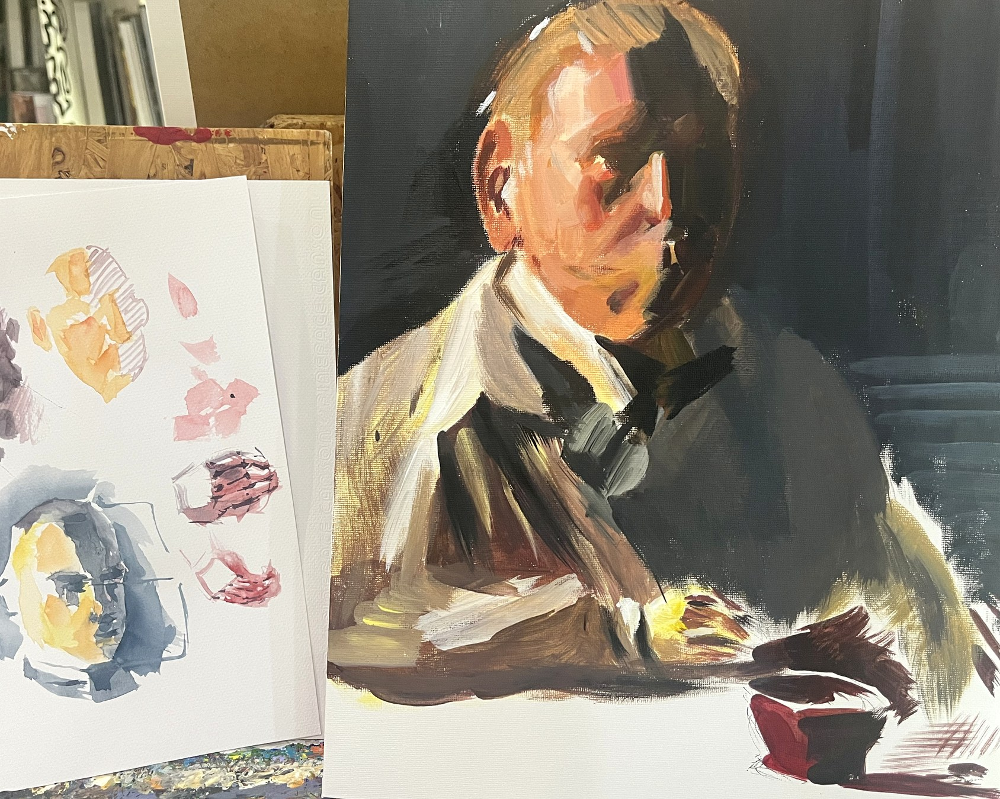
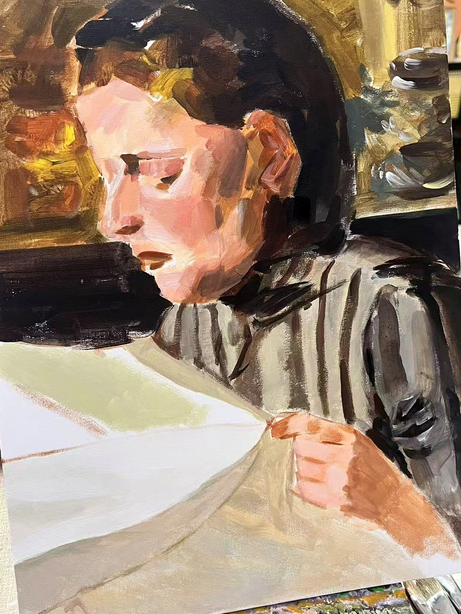
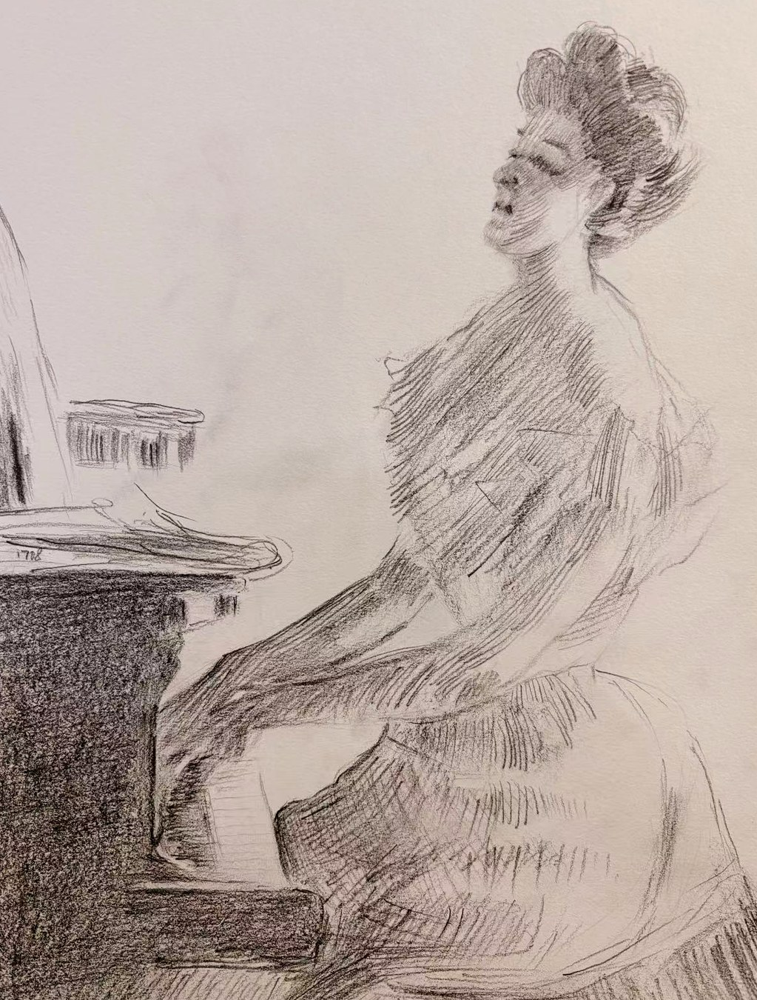

观看
她开始通过色点、灰度和线条密度观察明度变化，而不是只追逐对象轮廓。

她从色点、颗粒、线面体与肖像色块进入绘画训练，正在学习用明度、冷暖和块面关系组织画面。
盼盼的成长线索集中在基础观看能力的建立：从单个对象进入明暗、色温、体积和空间之间的关系。
她开始通过色点、灰度和线条密度观察明度变化，而不是只追逐对象轮廓。
肖像训练中，肤色、发色、衣服和背景逐渐被压缩成更明确的冷暖与块面关系。
黑白结构练习帮助她把线、面、体连接起来，建立人物姿态和空间方向的基础判断。
这组图像作为阶段材料展示，重点不是宣布作品完成，而是让训练中的判断过程被看见。


2026 年 7 月，盼盼作为学员参与 KART Field Study No.03 的楚雄段与曲靖段。这个项目由 Tony Zhou 与 Alice 发起并现场引导，将写生、自然采集和移动观看放进真实地点。
在高原、古镇与森林之间，重新学习如何观看。
这条项目记忆连接了她在导师课中的色彩、结构与明度训练：当对象从课堂材料变成老街、市场、蘑菇与街巷空间，观看就不只是“画下来”，而是学习把现场经验组织成画面关系。
这份项目记忆同时保存 Tony Zhou、Alice 与 Casino 的后续现场记录，也把盼盼在楚雄、曲靖段的学习经验放进更大的行走档案中。
进入项目记录KART 以美术馆的方式保存一个人的变化：不急着给结果定名，而是让成长中的判断被看见。
盼盼这一阶段最值得被保存的，是她开始理解：色彩不是填充，线条也不是轮廓，它们共同组织画面的关系。
她的训练材料里已经出现几条清晰线索：用颗粒和灰度寻找明度，用色块处理肖像转折，用线条密度建立体积。下一阶段可以继续从经典图像研究转向自己的画面组织，把方法变成更主动的表达。